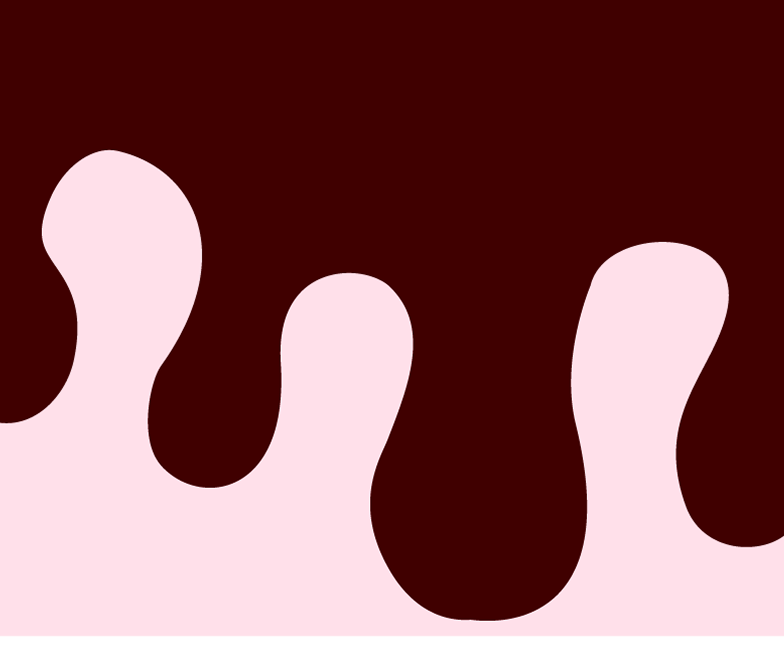
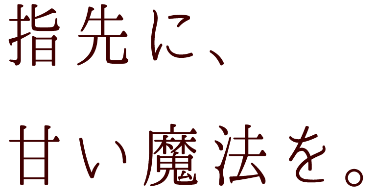
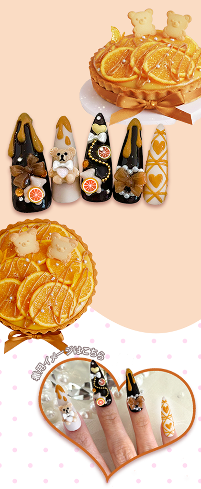
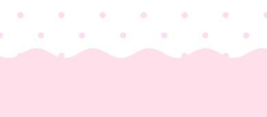
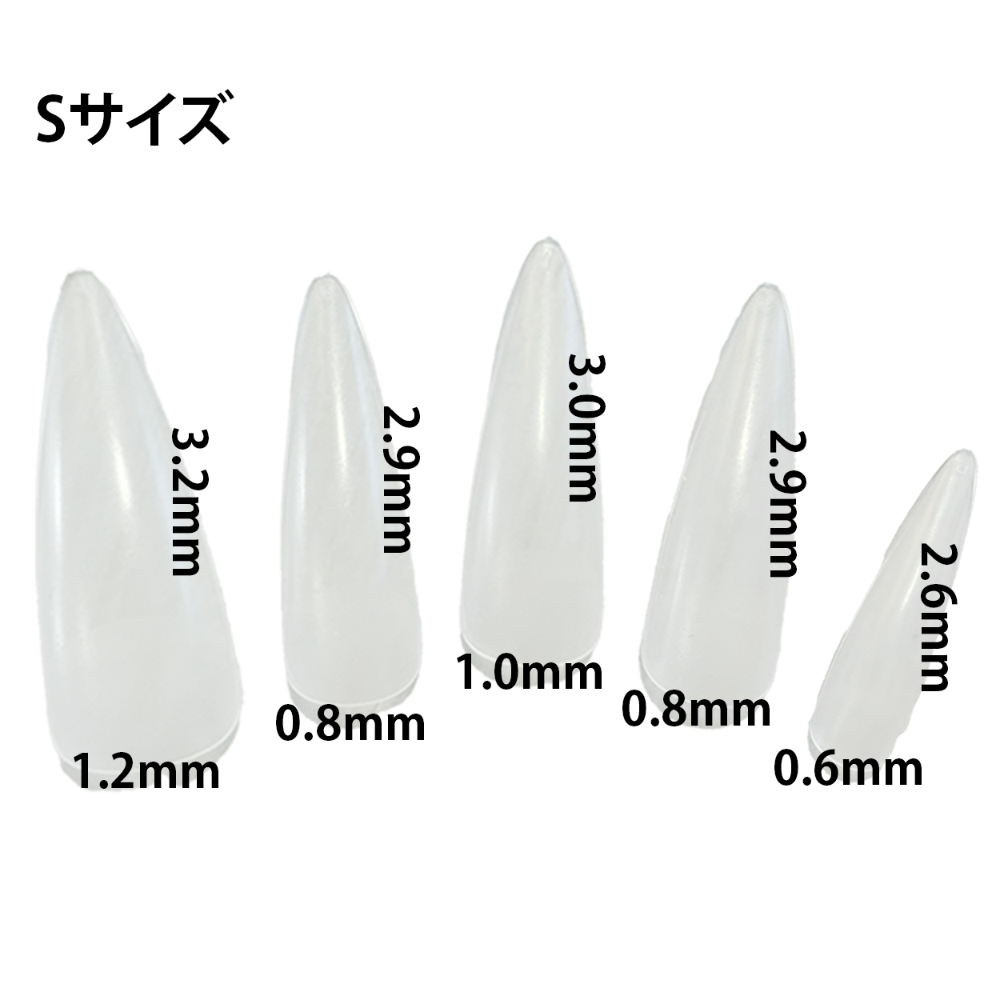
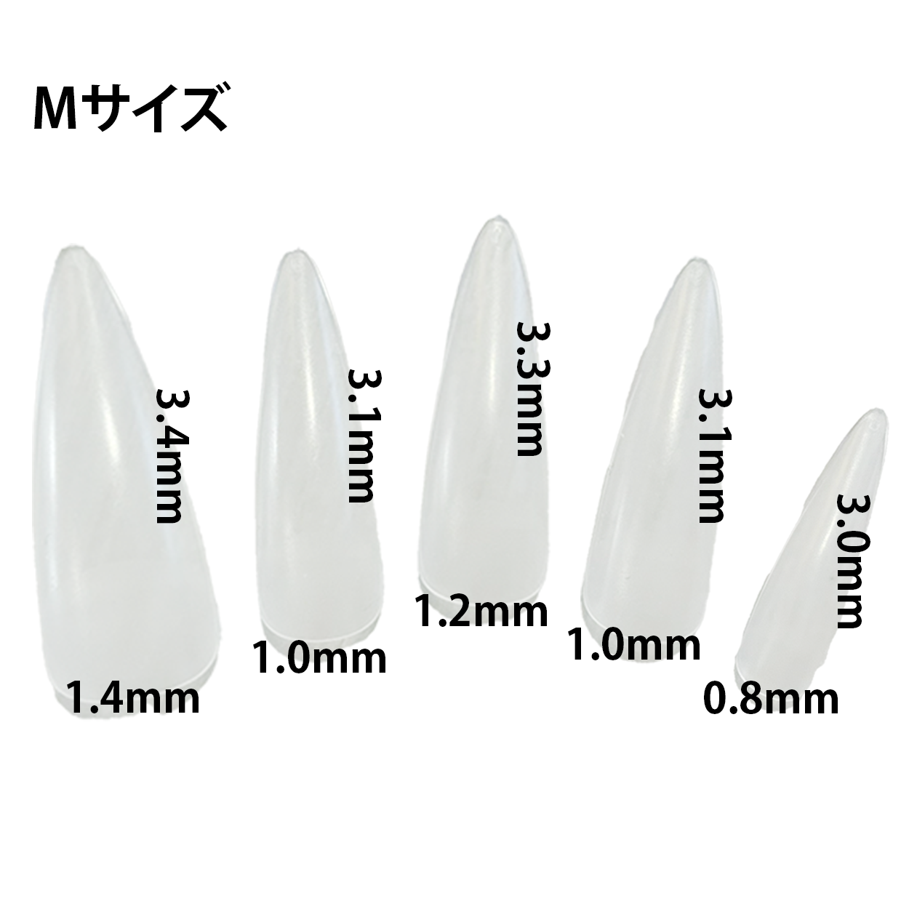

Lineup
Strawberry
Milk

ピンクと白でまとめた
いちごミルクネイル
フリル、リボン、ハートで甘いトッピング♡
Berry
Mousse

ふわふわのムースを
レースで再現♡
透け感のあるレッドが
ベリーソースのよう
Caramel
Orange

オレンジタルトに
キャラメルソースを♡
クマのクッキーで
さらにキュートに
Comment

Detail


（一部取り扱いなし）
FAQ
付け方を教えてください
ネイルチップの裏に粘着テープを貼り自爪に根本から貼り付けてください。
サイズが合いません
付属のミニヤスリで根本を削って調整してください。
繰り返し使えますか？
はい。粘着シートは一回きりですが、チップは繰り返し使っていただけます。
お風呂に入れますか？
粘着シートは長時間の水の使用には向いていません。取り外してからお入りください。